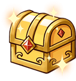
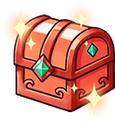
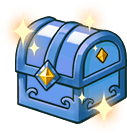
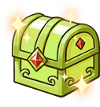
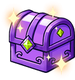
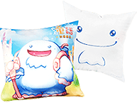

活動時間：2024/3/27~5/15 維護前。
-
- 忠誠玩家感謝禮
-
擁有老童話會員帳號，《童話：王國復甦》若有帳號，可獲得「忠誠禮A」

-
- 新玩家加入禮
-
沒有加入過童話的新玩家帳號，可獲得「歡迎新手禮G」
老玩家回歸禮
-
擁有老童話會員帳號，使用同帳號在活動開始後創建《童話：王國復甦》帳號，可獲得"回歸禮B"
-
 擁有老童話會員帳號，使用同帳號在活動開始後創建《童話：王國復甦》帳號，此新帳號內的任一角色達"20級"可獲得"回歸禮C" -
 擁有老童話會員帳號，使用同帳號在活動開始後創建《童話：王國復甦》帳號，此新帳號內的任一角色達"60級"可獲得"回歸禮D" -
 擁有老童話會員帳號，使用同帳號在活動開始後創建《童話：王國復甦》帳號，此新帳號內的任一角色達"完成第一次轉生"可獲得"回歸禮E" -
 擁有老童話會員帳號，使用同帳號在活動開始後創建《童話：王國復甦》帳號，此新帳號內的任一角色達"完成一次魔幣消耗不限金額"可獲得"回歸禮F"
實體獎勵
-

童話束口背袋(10名) -
 童話抱枕(10名) -
童話鑰匙圈(10名)